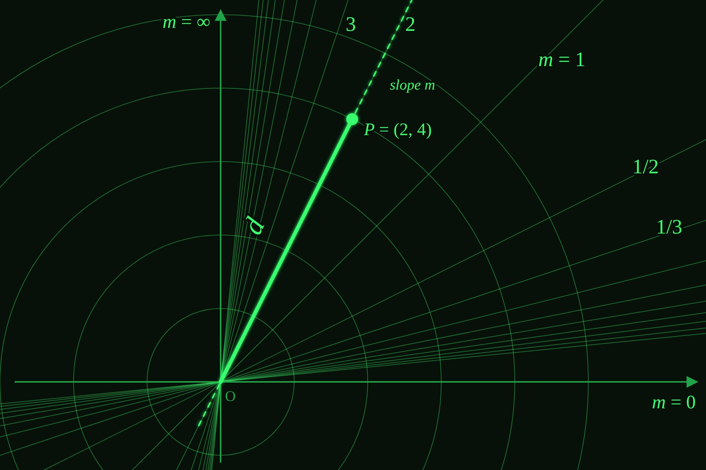

Slope Distance Coordinates
Like polar coordinates, but with slope instead of angle. Also see the interactive version and the infinity graph paper.
Figure 1: The md coordinate system

A coordinate system that locates a point by the slope of the line that would intersect it and the origin (m), and its distance from the origin (d). This is not much different from polar, just slope instead of angle. Functions will be d as a function of m.
Figure 2: d = 10

Note the small space between what would be the y axis and the graph. The only place an md graph can touch this vertical axis is at zero. It can get arbitrarily close, of course, but this graph's domain was -20 < m < 15.
Figure 3: d = m
Where Figure 2 was maybe trivial but still instructive, the graph of d = m is less obvious. The next few figures will illustrate what happens when we show classic x,y graphs on this m,d graph paper.
Figure 4: d = m - 7
Keeping it simple, d = m - 7. This is obviously a very cool graph, and I conjecture that it would make a good Formula 1 curve. The dotted line tracks with the value of m.
Figure 5: d = cos(m)
This graph shows how more and more information is displayed as m → infinity. It also shows the solutions where d < 0 appear to the left of the m = infinity axis (I'd rather not call it the y-axis).
Figure 6: d = sin(5m) + 5
Trigonometric functions look better when pushed away from the origin. I multiplied the argument by 5 to fit more spring activity between -1 and 1, where fully half of the graph gets drawn in md.
Figure 7: Polynomials make knots
Lots of different polynomials look pretty cool, I chose this cubic. Note it passes through the origin three times, at the appropriate slope value.
Figure 8: Drawing fake x,y graphs in m,d
[Image to come: a vertical straight line passing through the m axis at d = 3]
Undoing the transformation carefully yields some familiar looking graphs, starting with one that looks like y = 3. Important note: it never touches the 'y' axis, so it differs from y = 3 in that respect.
Figure 9: What about other lines?
[Image to come: a straight line meant to look like y = 5x + 3]
The same idea of having a classic x,y graph appear on the m,d plane.
Figure 10: Adding md flavor to these 'x,y' classics
[Image to come: the vertical line again, with bumps from an added md sin curve that run together toward the top]
At this point just trying to make cool looking pictures.
Figure 11: Another spring looking shape
[Image to come: a 'spring' affixed below the origin as in Figure 6, with the other end going right then vertical like in Figure 10]